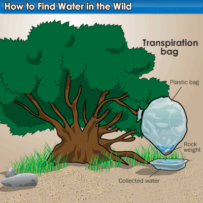
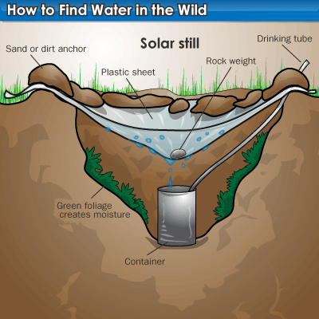
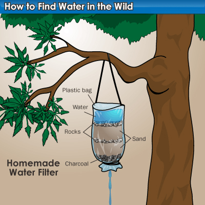
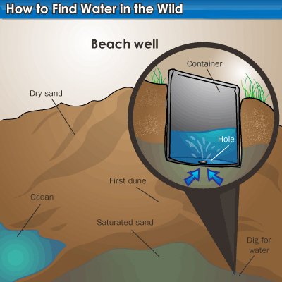

4. ΕΥΡΕΣΗ ΝΕΡΟΥ
Σε περίπτωση που κάποιος βρεθεί χαμένος στην άγρια φύση, το μοναδικό και πιο σημαντικό πράγμα που θα χρειαστεί είναι το νερό. Εάν κάποιος είναι γνώστης της άγριας φύσης μπορεί να εντοπίσει ή να συλλέξει νερό σε σχεδόν οποιάδηποτε μέρος του πλανήτη.
Το ανθρώπινο σώμα αποτελείται κατά 90% περίπου από νερό. Χωρίς το νερό ο άνθρωπος δεν μπορεί να επιζήσει πάνω απο 3 μέρες σε θερμό κλίμα και 12 μέρες σε ψυχρό. Σε ένα ήπιο κλίμα, ο ανθρώπινος οργανισμός, με ένα κανονικό επίπεδο δραστηριότητας, χρειάζεται ημερησίως 2,5 λίτρα νερό. Η ανάγκη αυτή κυμαίνεται ανάλογα με την υγρασία, τον αέρα, τη θερμοκρασία και την ποσότητα της φυσικής δραστηριότητας του ανθρώπου. Για να διατηρείται το σώμα ικανό και να έχει πιθανότητες επιβίωσης, πρέπει να ικανοποιούνται οι ελάχιστες ημερήσιεςανάγκες σε νερό. Δεν είναι όμως μόνο η ποσότητα του νερού που είναι κρίσιμη, αλλά επίσης και η ποιότητα. Το μολυσμένο ή ακάθαρτο νερό θα κάνει στον επιζήσαντα περισσότερο κακό παρά καλό, αυξάνοντας τόσο την απώλεια υγρών, όσο και τον κίνδυνο σοβαρού νοσήματος.
Ακόμη και αν εφαρμόσετε όλα τα δυνατά μέτρα προφύλαξης, χωρίς αρκετό απόθεμα πόσιμου νερού, απλώς θα παραταθεί η επιβίωση για μερικές μέρες. Είναι αναγκάιο να εντοπίσετε ή να βγάλετε νερό από οποιαδήποτε διαθέσιμη πηγή, ενώ θα είστε εξίσου προσεκτικός για το φιλτράρισμα και τον καθαρισμό. Ασθένειες και παράσιτα που προέρχονται από το νερό αποτελούν σοβαρό κίνδυνο υγείας για τον επιζήσαντα, αλλά ο κίνδυνος αυτός πρέπει να αντισταθμίζεται έναντι του κινδύνου να πεθάνει κανείς από δίψα.
Η βροχή, οι χείμαρροι και τα ποτάμια παρέχουν την μεγαλύτερη ποσότητα πόσιμου νερού στον κόσμο, αλλά δεν είναι πάντα εύκολο να βρεί νερό κάποιος από τέτοιες πηγές. Τα ζώα και τα έντομα δίνουν κάποια ένδειξη παρουσίας νερού: παρακολουθήστε νωρίς τα χαράματα ή κατά την δύση του ηλίου τα ζώα που βοσκούν, διότι τότε πηγαίνουν να πιούν νερό. Επίσης εάν βρείτε μια λασπώδη περιοχή, ενδέχεται να υπάρχει νερό υπογείως. Σκάψτε ένα λάκο περίπου μισό μέτρο βαθύ και με διάμετρο 1 μέτρο και σύντομα θα παρατηρήσετε ότι θα γεμίσει με νερό. Το νερό θα είναι λασπωμένο αλλά αν το στραγγίξετε με καποιο ύφασμα θα καθαρίσει και θα σας εξασφαλίσει για λίγο χρονικό διάστημα. Τέλος να γνωρίζετε ότι το βρόχιμο νερό μπορεί να καταναλωθεί χωρίς ρίσκο μόλυνσης ή ασθένειας. Για να συλλέξετε βρόχινο νερό μπορείτε να χρησιμοποιήσετε ένα πόντσο (στρατιωτικό αδιάβροχο) ή κάποιο πλαστικό σεντόνι.
Αν δεν είναι δυνατό να εντοπιστεί νερό στην επιφάνεια ή κάτω από την επιφάνεια του εδάφους, μπορείτε να το αποκτήσετε από διάφορες άλλες οηγές, όπως αυτές που περιγράφονται παρακάτω.
Φυτικές Πηγές - Νερό συλλέγεται απο πολλά και διάφορα φυτά. Περιέχεται στα ζωντανά κλήματα και μπορεί να εξαχθεί από κάκτους. Ένας εύκολος τρόπος συλλογής υγρασίας είναι να καλύψουμε το φύλλωμα ενός φυτού με μια καθαρή πλαστική σακούλα - με τον τρόπο αυτό, στην κυριολεξία, αντλούμε νερό από το έδαφος. Τα φυτά όλων των ειδών παίρνουν νερό από το έδαφος και το διανέμουν στα φύλλα, από όπου αυτό αποδεσμεύεται ως μέρος της διαδικασίας αναπνοής. Επιλέξτε ένα πράσινο φυτό και τοποθετήστε τη σακούλα στην κορυφή ενός υγιούς φυλλώματος, και εν συνεχεία δέστε το λαιμό της γύρω από τη βάση του κορμού του φυτού. Δίπλα στο φυτό, ανοίξτε ένα μικρό λάκκο στο έδαφος και ωθήστε την πλαστική σακούλα μέσα σ' αυτόν για να σχηματίσει ένα σημείο συλλογής της συμπυκνούμενης υγρασίας.
Δρόσος (Δροσιά) - Στα περισσότερα φυτά και ιδιαίτερα στη χλόη μπορεί να βρούμε μεγάλες σταγόνες νερού στην πρωινή δροσιά. Αυτό είναι ιδιαίτερα εξυπηρετικό για εκείνους τους επιζήσαντες που είναι τραυματισμένοι και δεν μπορουν να μετακινηθούν εύκολα. Οι σταγόνες της δροσιάς μπορούν να σφουγγιστούν, αν απλώσουμε απαλά ένα απλό ύφασμα πάνω στην υγρή χλόη και μετά το στραγγίξουμε. Σε λιγότερο από μια ώρα μπορούμε με τον τρόπο αυτόν, να μαζέψουμε μερικά λίτρα νερό. Το νερό αυτό είναι αρκετά καθαρό και μπορούμε το πιούμε χωρίς αποστείρωση.
ΑΛΛΕΣ ΤΕΧΝΙΚΕΣ ΕΥΡΕΣΗΣ ΝΕΡΟΥ
  